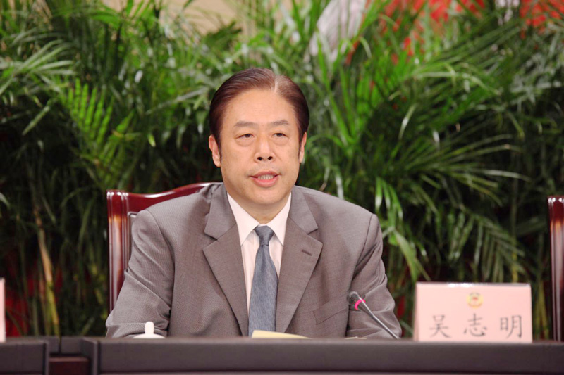

在党中央、国务院的正确领导下，上海积极响应国家食品安全战略。市委、市政府高度重视国家食品安全示范城市创建，召开全市食品安全工作会议，全面部署“三级联创”，层层落实责任。各级党委政府认真贯彻落实，形成党政同责、齐抓共管的创建合力。

“顺应人民群众对身体健康和生命安全的更高期待，坚决按照以习近平同志为核心的党中央的部署，严格落实‘四个最严’要求，完善食品安全工作治理体系，强化依法严管、强化责任落实、强化科技支撑、强化齐抓共管的合力，努力建成市民满意的食品安全城市，全力保障广大市民‘舌尖上的安全’”。
——中央政治局委员、上海市市委书记

2015年8月23日，国家食品药品监管总局局长毕井泉与时任上海市市委副书记、市长杨雄共同为上海市食品药品安全委员会办公室揭牌。

“加强政府和政府有关部门的监管责任，严格落实企业的主体责任，依靠全社会的力量，努力把上海建设成为食品最安全、消费最放心、市民满意的安全城市之一，来提升上海城市综合竞争力。”
——上海市市长应勇

“上海将继续制定完善相关配套文件，建立食品安全“最严”监管长效机制。将以最严的法治保障，落实习近平总书记对食品安全的‘四个最严’要求，建立最严格的食品安全领域法律责任制”。
——上海市人大常委会主任殷一璀

“超大城市食品安全管理仍面临很多风险挑战，需要始终坚持目标导向、问题导向，找准工作着眼点和着力点，压实部门监管责任、企业主体责任，建立常态化稳固的监管体制机制，形成强大监管合力。”
——上海市政协主席吴志明